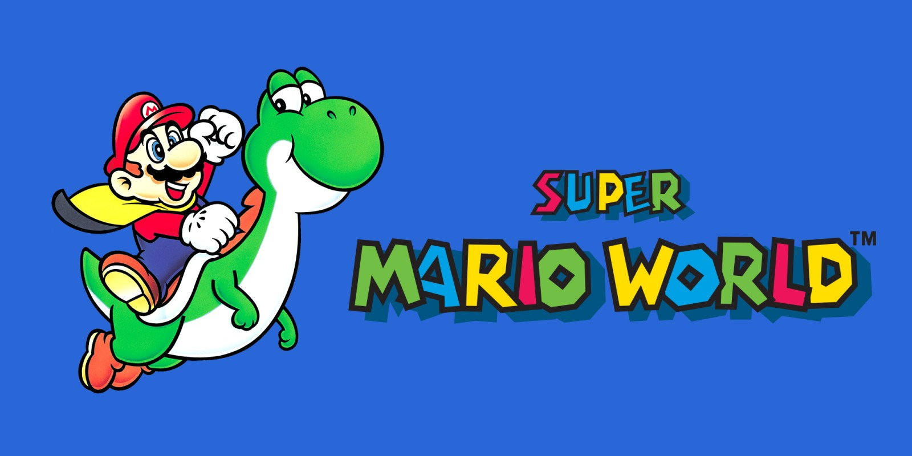

Super Mario World

- Desarrollador: Nintendo EAD
- Plataforma: Super Nintendo Entertainment System (SNES)
- Género: Plataforma
- Jugabilidad: Super Mario World sigue las aventuras de Mario en el mundo de Dinosaur Land para rescatar a la Princesa Toadstool y a los amigos de Mario, los Yoshis, del villano Bowser. Introdujo a Yoshi, un dinosaurio que Mario puede montar.
- Características: Ofreció un mundo expansivo con múltiples niveles y rutas secretas, power-ups innovadores y gráficos coloridos para la época.
- Impacto Cultural: Considerado uno de los mejores juegos de plataformas de todos los tiempos, estableció muchos estándares para futuros juegos de Mario y de plataformas en general.